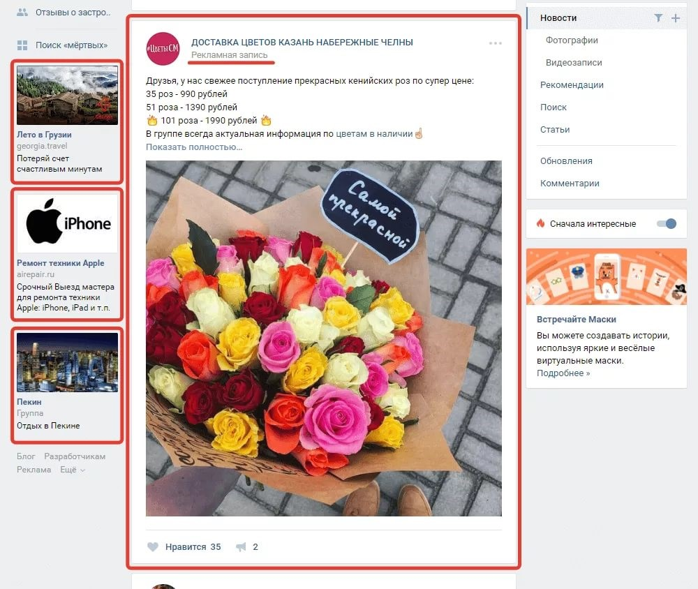

Blogging – биржа труда для молодого поколения
Сегодня подобные вопросы интересуют не столько взрослых, сколько новое поколение. С каждым днем прогрессивная молодежь старается, как можно раньше стать финансово независимыми от своих родителей. Но найти источник дохода не так уж и просто. При найме на работу человека с незаконченным образованием или же вовсе без него возникает множество нюансов. И, дабы избежать всяческих трудностей, молодёжь начали искать вакансии посредством развития информационных технологий и глобальной сети Интернет. Самая популярная – ведение личного блога.
Подавляющее большинство людей, сами того не зная, ведут блоги. Но далеко не каждый знает, как можно на этом зарабатывать.
Что же такое блог и как на нем зарабатывать?
Слово «блог» сформировалось от английского «web log», т.е. интернет-журнал событий. В классическом понимании это сайт, где пользователь публикует свои размышления на ту или иную тематику.
Стоит учитывать парочку нюансов, перед началом своей блогерской карьеры: к созданию блога, как и к любой работе, нужно подойти со всей серьезностью. Вам необходимо выбрать тематику, а также платформу. Естественно ваши публикации должны отражать интересы автора, цель, для которой и создавался ваш продукт. Исходя из перечисленного и формируется контент блога. Что касается платформы, то здесь нет каких-либо ограничений. Одни из самых популярных: Tumblr, WordPress, Medium. В качестве платформы допустимо использовать и соц.сети: Instagram, Twitter, Facebook. Следующий шаг- оформление, своевременно опубликованный и интересный контент. Однако, выполнив вышеперечисленные действия, у вас появится только средство самовыражения.
Как монетизировать свой труд?
Необходимо создать стабильный трафик блога. Существует несколько способов:
Регулярность публикаций
Ваша задача заинтересовать читателя своим материалом, чтобы ему захотелось посетить блог снова. Таким образом, вы «по кирпичику» соберете целевую аудиторию. Именно она и станет залогом вашего дальнейшего успеха.
Партнерские программы
Это самый простой и доступный метод монетизации для новичков. Суть в том, что вы размещаете ссылку в тексте статьи, где рекомендуете определенный товар или услугу. Когда читатели блога переходят по вашей ссылке и покупают продукт, к вам на счет капают проценты с продаж партнёра.
Прямая реклама
Данный способ менее выгоден, особенно для новичка. На партнерских программах можно заработать гораздо больше, даже с меньшим трафиком.
Тем не менее, многие выбирают рекламу как основной способ заработка. Если же вы из этого числа блогеров, то вам стоит только определиться, какой из видов рекламы для вас более подходящий.
-
Таргетированная реклама
Фото взято на promodex.net («Особенности look-a-like аудитории в таргетинге»)
Это рекламные блоки с небольшими картинками, заголовком и кратким описанием. Наиболее популярные рекламные сети – Рекламная сеть Яндекса и Google AdSense. Начисления появляются за клики на Google AdSense или за просмотры в рекламной сети Яндекса. Чем больше посетителей перешли по рекламной ссылке и просмотрели её на странице, тем больше вы заработаете. Для того чтобы разместить в своем блоге такую рекламу, нужно зарегистрироваться в рекламной сети, пройти модерацию, выбрать место на сайте, где рекламный блок смотрелся бы органично, и разместить специальный код, визуально выводящий объявление на страницах.
Фото взято на 1ps.ru
-
Тизерная реклама
Это что-то подобное на таргетированную рекламу, но с некоторыми особенностями. В переводе с английского слово «teaser» означает «дразнилка».
Все это направлено на то, чтобы посетитель обязательно обратил внимание на рекламу и перешел по ней. Собственно, от этого и будет зависеть прибыль.
Bodyclick, TeaserNet – одни из популярных тизерных рекламных сетей.
Чтобы разместить рекламу, ваш алгоритм действий такой же, как и в случае с таргетом.
-
Баннерная
На таком виде рекламы можно получать доход двумя способами:
- Через рекламную сеть, получая оплату за клики. Среди таких хорошо зарекомендовал себя сервис Rotaban.
- Продавая баннеры напрямую посуточно или беря плату за месяц. Актуально при хорошей посещаемости.
Создавать и устанавливать баннеры можно самостоятельно, либо использовать специальные сервисы и скрипты.
-
Брендирование
Самый дорогой вид рекламы. Это имиджевый рекламный формат для максимального охвата аудитории. Представляет собой фон на сайте, который невозможно не заметить.
-
Рекламные статьи
Распространенный способ монетизации, когда рекламодатель связывается с вами напрямую и договаривается о создании обзора его продукта или услуги.
Перечисленные способы заработка – только наиболее популярная часть того, как вы можете работать в собственном блоге. Если грамотно развивать свой продукт, можно выйти на зарплаты людей, работающих по найму в крупных компаниях. Главное – помнить, что прибыль зависит только от вашей работы.
Материал подготовила Ангелина Точинская
19.11.2020